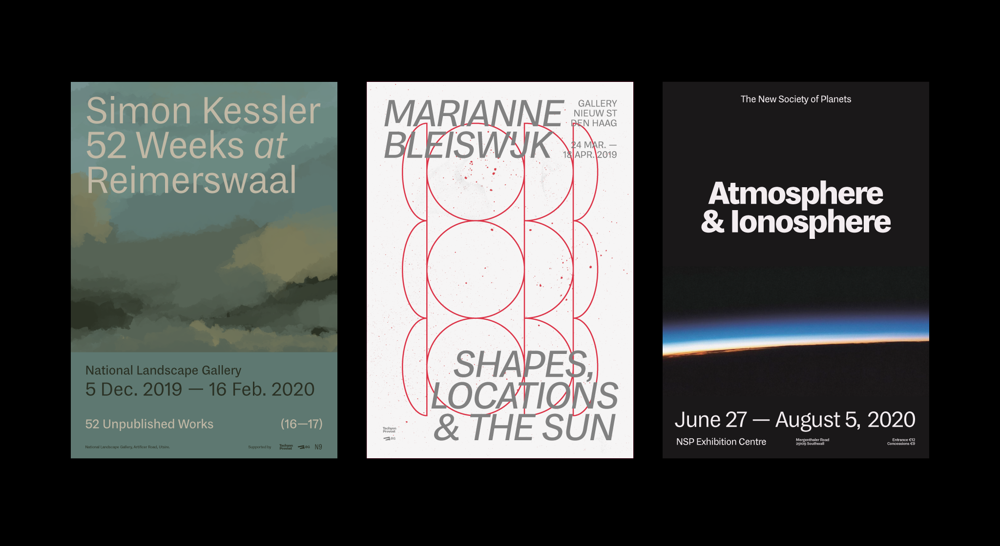

A typeface for general practice (2019–20)
My first commercial release, MD System is a grotesque typeface based on a number of historical references, and designed for both printed text and screen UI.
Available for licensing at Mass-Driver.

Exhibition Posters · Designed to accompany the release of MD System.